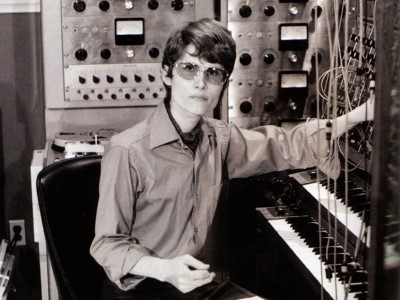

Career
Moog synthesizer
Carlos was instrumental in developing and popularizing the Moog synthesizer. Working closely with its inventor, Robert Moog, in the 1960s, she provided practical feedback that improved the instrument’s design. Her 1968 album Switched-On Bach, recorded entirely with the Moog, reinterpreted Johann Sebastian Bach’s music through electronic sound. The album was a commercial and critical success, winning three Grammy Awards and selling over a million copies. It demonstrated the synthesizer’s potential as a serious instrument and helped bring electronic music into the mainstream.
Composing
Beyond her role in electronic music, Carlos built a significant career as a composer. She created influential film scores for Stanley Kubrick’s A Clockwork Orange (1971) and The Shining (1980), as well as Disney’s Tron (1982). Her compositions combined classical structures with electronic textures, expanding the soundscape of cinema. Carlos also released albums such as Sonic Seasonings (1972), an early exploration of ambient music blending synthesized and natural sounds. Her body of work demonstrated both technical innovation and musical depth, establishing her as a central figure in late twentieth-century composition.
Gender transitioning
Carlos began her gender transition in the late 1960s, undergoing hormone therapy and later surgery at a time when transgender issues were rarely discussed publicly. For nearly a decade she kept her identity private, appearing in disguise during performances and interviews. In 1979, she publicly acknowledged her transition in an interview with Playboy. While she preferred attention on her music, Carlos’s openness made her one of the first prominent transgender figures in the arts. Her decision to live authentically was groundbreaking and contributed to greater visibility for transgender people in culture and music.